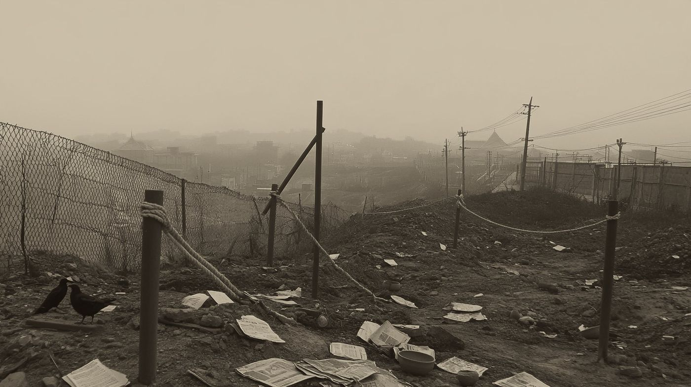
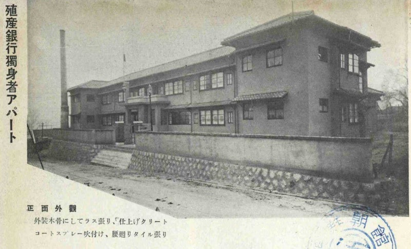
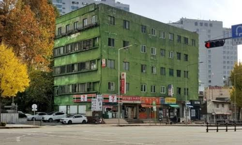
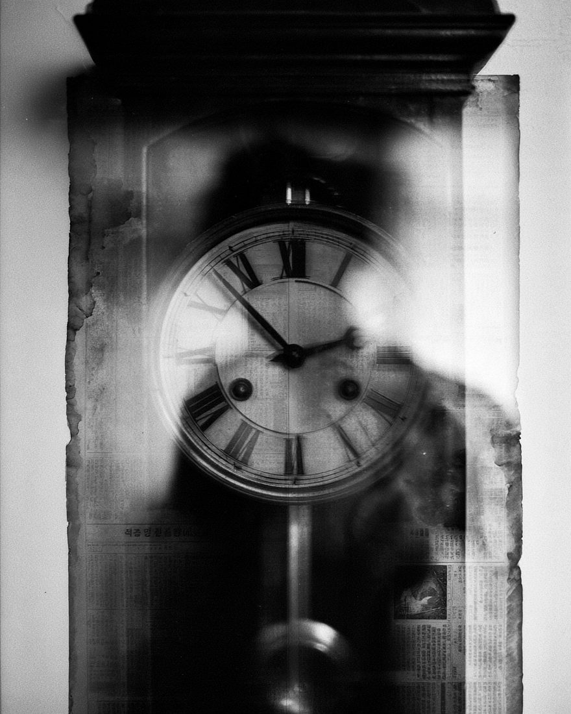
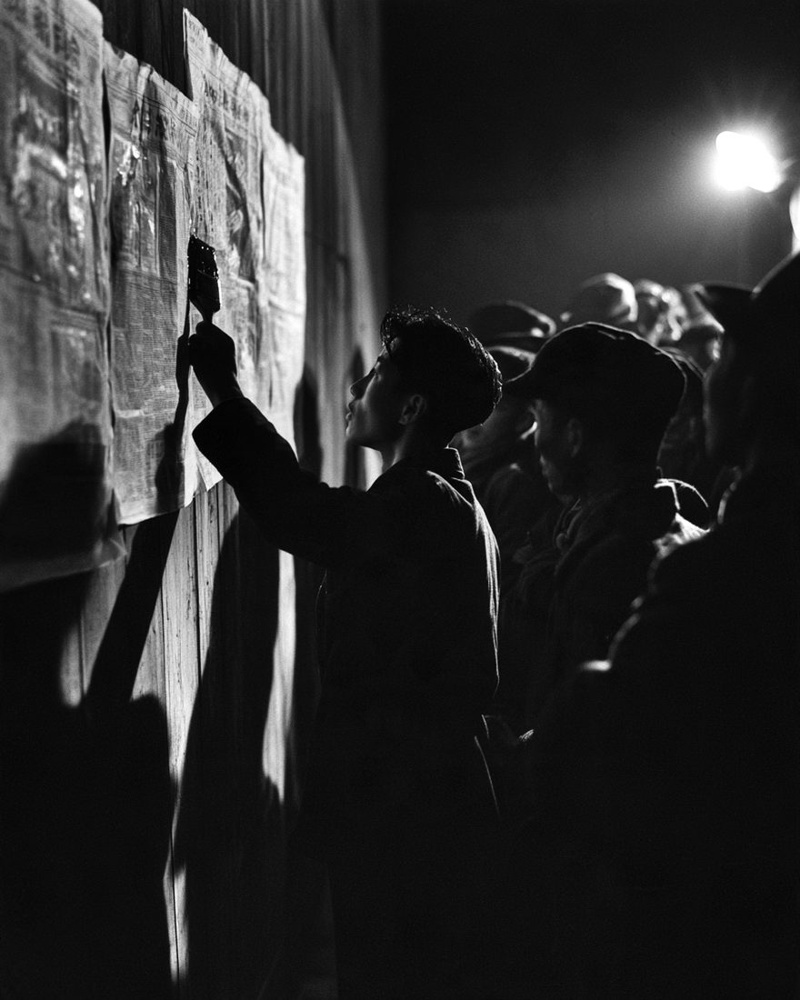
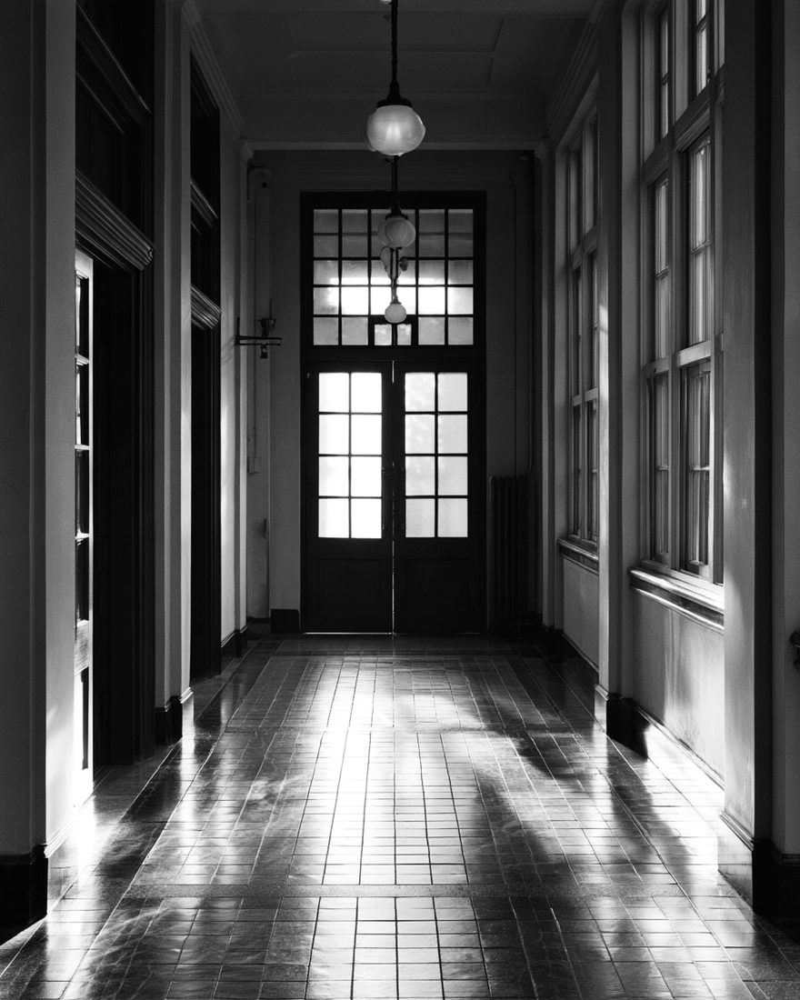
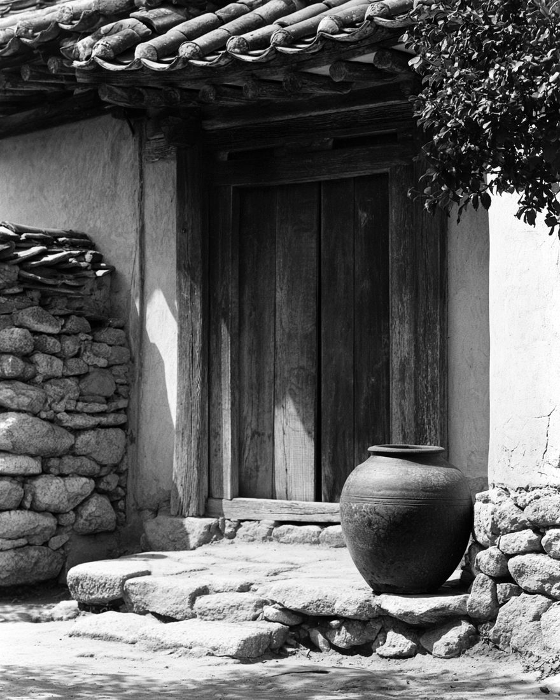
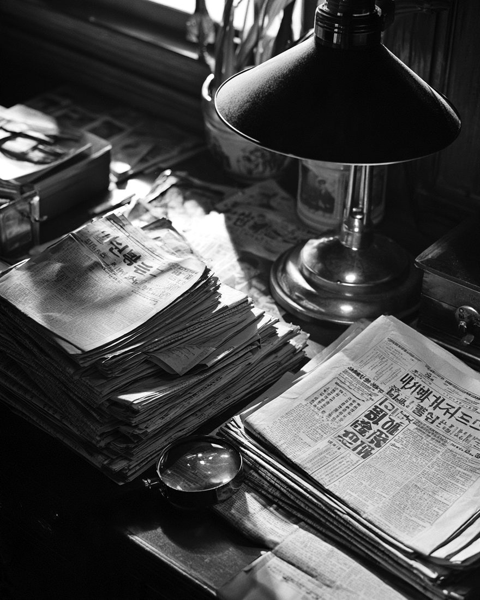

한 살 · 계집아해
「사내아해 갓다」 · 「유아」
병으로 죽어 염리에 누엇다는 것. 일홈은 — 이 지면이 쓰지 안소.
식은 쓰레기장서, 오월 십륙일 아츰.
이십삼 일 동안, 경성은 엉뚱한 말들을 쪼차갓소.
죽첨정 삼정목 금화장 부근, 식산은행 쓰레기 매립지에서 어린 아해의 머리가 발견되엿소.
죽첨정의 한 가족 다섯이 서대문서에 검거되어 조사를 바닷소. 그들은 모다 범행을 부인하엿소.
진상은 호외에서 드러나오.
살인은 업섯소. 무덤이 잇섯고, 한 마듸 말이 잇섯소.
출처 · 동아일보 아카이브 (1933년 5월 17일 ~ 6월 8일자 지면) · 신동아 1933년 7월호 · 전봉관 「죽첨정 '단두 유아' 사건」 · 한국사 데이터베이스
「아해의 ○은,
○이 된다.」
지워진 두 글자는, 이 지면 끗에서 채워지오. 누가 처음 한 말인지 아모도 모르오. 듯는 이는 대개 웃고 넘겻소.
이 말을, 기억해 두시압.
※ 그 무렵 떠돌든 미신을 바탕으로 경성야록이 다시 쓴 채록 카드요. 재구성
原文동아일보 1933.5.17 · 2면 · 그림은 재현
오전 일곱 시 반, 금화장 언덕 아래 식산은행 쓰레기 매립지. 서대문서에 신고가 드러왓소. 아해가 누구인지, 아모도 몰랏소.

그림 · 재현그 매립지가 잇든 동네 — 죽첨정 일대의 그때와 이제.


매립지는 메워지고, 동네만 남앗소. 사진 속 건물은 그 동네의 것 — 그 아츰의 자리가 정확히 어대엿는지, 이제는 아모도 모르오.
※ 우 두 사진은 현장이 아니라 가튼 동네의 건물이오. 다른 때, 다른 각도에서 박은 것이오.
原文동아일보 1933.5.17 ~ 6.8 지면
오월 십칠일자 동아일보 2면에 「유아 단두 사건」이 처음 실렷소. 형사 십여 명이 팔방으로 나섯지만, 아해가 누구인지조차 밝혀지지 아넛소.
시내 형사 총출동
팔방 활동도 수포
유아 단두 사건 · 피해자 신원도 불판명
「남녀를 분간할 수는 없으나 머리를 깎은 것을 보아 사내아이 같다」
「문둥병 환자의 짓이 아닌가」
서대문경찰서장「범행은 금일 새벽, 원한이나 치정관계에서 나온 것이 아닌가」
밑줄 친 말을 누르시압 — 그때의 말 · 지면이 쓴 법 · 그 말에 빠진 것.
첫날 지면의 말은 이 여섯이엇소. 경성제대 부검도 「사내아해」라 보앗고, 범인을 「문둥병 환자의 짓이 아닌가」 짐작하는 대목은 한센병 환자를 향한 편견을 그대로 지면에 올렷소.
對照경성제대 감정(5.16) · 동아일보 5.17 · 6.2 · 6.8 호외
가튼 아해를 두고 긔록은 세 번 말하엿소. 감정이 말하고, 지면이 쓰고, 이십삼 일 뒤 호외가 뒤집엇소. 아래 장을 꾹 누르고 잇으면 — 뒤의 긔록이 비쳐 보이오.

그림 · 재현다섯 장을 겹쳐 보고 나면 — 감정은 대개 맛앗고, 틀린 것은 그 우에 얹힌 말이엇소. 「범행」 · 「살인」 · 「혐의자」. 그 말들이 이십삼 일을 끌고 갓소.
근거 · 동아일보 1933년 5월 17일 · 6월 2일 · 6월 8일자 · 전봉관 「죽첨정 '단두 유아' 사건」 (경성제대 감정 · 가장의 사망일 인용) · 「겹쳐 보니」의 읽기는 경성야록의 것
原文동아일보 1933.5.17 ~ 6.3 지면에 실린 혐의자만
이십삼 일 동안 서대문서가 의심한 이들. 동아일보 지면에 실린 것만 추려 다시 적엇소.
근거 · 동아일보 1933년 5월 17일 · 6월 2일 · 6월 3일자 · 전봉관 「죽첨정 '단두 유아' 사건」 · 장부 모양은 재구성
再構成전봉관 「죽첨정 '단두 유아' 사건」 · 신동아 2005년 11월호 (당시 동아·조선일보 · 신동아 1933년 7월호 인용)
신문에 다 실리지 못한 수사의 길이오. 형사들의 발자국을 따라, 천천히 내려가시압.
날마다 해가 떳고, 날마다 범인은 업섯소.지면이 침묵한 날이, 말한 날보다 길엇소.
근거 · 전봉관 「죽첨정 '단두 유아' 사건」 (신동아 연재 · 당시 동아일보 · 조선일보 기사 인용) · 동아일보 1933년 5~6월 · 사람 이름은 쓰지 않음 · 그림은 모다 재현
그리고 유월 팔일 — 호외가 나왓소.

그림 · 재현原文동아일보 1933.6.8 · 호외 꼴은 재구성
살인은 —
업섯소.
아해는 병으로 죽어, 이미 무덤에 누어 잇섯소.
그 무덤을 판 이가 잇섯소. 간질을 앓는 여섯 살 아들에게 — 사람의 뇌수가 약이 된다는 말을, 미든 것이오.
※ 여긔서 「진범」은 아해를 죽인 이가 아니라 — 무덤을 판 이오.

그림 · 재현채록 — 처음에 흘려들은, 그 말지워진 두 글자가 채워지오
「아해의 ○골은,
○약이 된다.」
신인이 공노할, 이 미신두 사람은 분묘 발굴과 사체 훼손죄로 징역 사 년과 삼 년을 바닷소.
출처 · 동아일보 아카이브 1933.06.08 지면 제목 (한자 제목을 우리말로 옮김 · 사람 이름은 뺌) · 전봉관 「죽첨정 '단두 유아' 사건」
原文동아일보 1933.6.2 · 2004년 사례는 오늘의 보도
받아 적은 말은, 곳 퍼뜨린 말이 되엇소. 그리고 칠십일 년 뒤에도 — 가튼 일이 되풀이되엇소.
"유력한 혐의자로 시내 죽첨정에서 대금업을 하다 죽은 ○○○의 아들과 그의 전 가족 5명은 서대문서에 검거되어 엄밀한 취조를 받고 있다 … 그러나 그들은 범행 일체를 부인하고 있다."동아일보 1933년 6월 2일자 (전봉관 글에서 재인용 · 이름은 가림)
무죄의 증거는 처음부터 잇섯소 — 지면이 범인으로 가리킨 이 집안의 가장은 오월 십삼일 병원에서 이미 숨졋고, 아해가 숨진 것은 빨라야 십오일 밤이엇소. 가족은 열흘 만에 풀려낫소.
"서대문경찰서는 죽첨정 일대 주민 몇 명을 조사하고 있다. 경찰은 아직 용의자를 특정하지 않았다."※ 오늘의 보도 준칙대로 다시 쓴 것 · 수사 단계의 사람은 이름 · 주소 · 가족을 밝히지 않음 (무죄 추정)
경찰은 폐기용 단무지 자투리로 만든 만두소가 25개 업체에 납품됐다고 발표했다. 며칠 뒤 식약청은 25개 업체의 실명을 그대로 공개했다.
언론은 '쓰레기 만두'라는 이름으로 선정적으로 보도했고, 일본과 미국은 즉시 한국산 만두 수입을 금지했다.
실명이 공개된 25개 업체 가운데 12개가 무혐의 판정을 받았다. 문제의 자투리는 인체에 해롭지 않았다는 검사 결과가 이어졌다.
구속된 사람은 한 명도 없이 나머지 업체가 가장 가벼운 시정명령을 받고 끝났다. 그 사이 상당수 업체가 부도났고, 한 업체 대표가 숨지는 비극으로 이어졌다.
조사를 밧는 이는, 아즉 범인이 아니오.
근거 · 주간경향 「만두파동 아직 끝나지 않았다」(2004.7.29) · 한국경제 생글생글 「'아니면 말고 式' 먹거리 파동」(2009.5.8) · 업체 이름은 쓰지 않음
對照동아일보 1933.5.17 ~ 6.8 · 전봉관 연재
의심을 바든 이들의 그 뒤는 4장의 장부에 적어 두엇소. 여긔엔 — 사건의 한가운대 잇섯는데도 지면이 끗내 일홈을 부르지 안은 세 사람만 남기오.
「사내아해 갓다」 · 「유아」
병으로 죽어 염리에 누엇다는 것. 일홈은 — 이 지면이 쓰지 안소.
석탄 가게 일꾼과 그의 친구 엿장수 · 분묘 발굴 · 사체 훼손 — 징역 사 년 · 삼 년
「가난하지만 선량한 일꾼」이엇다 하오. 그가 왜 그 부탁을 거절하지 못햇는지는 — 업소.
「약이 된다」는 말을 미든 집 · 이 원
병은 낫지 아넛고, 더 깁허졋다 하오. 약이 업든 시절의 이야기요.

그림 · 재현긔록을 들출수록 또렷해지는 것은 하나요 —
무엇을 확신할 수 업는가.
「未詳」은 이 지면이 쥔 긔록(동아일보 일곱 날 · 신동아 · 전봉관 연재) 안에서 찻지 못햇다는 뜻이오. 다른 긔록에 잇슬 수 잇소.
解說진상 이후의 자료 · 그림은 재현
진범은 잡혓소. 그러나 그 말은,
누구에게도 잡히지 아넛소.
여전히, 그 말은 우리 겨테서 소근거리고 잇소.
소화 팔 년 오월 · 경성 죽첨정
그 아해는 한 살이엇소.
병으로 죽어, 한 번 무덤에 누엇소.
그리고 두 번 파헤쳐젓소 — 한 번은 미신에게, 한 번은 신문에게.
지면은 그 아해를 「사내아해」라 불럿다가, 「유아」라 불럿소.
이 지면은,
그 아해의 일홈을 쓰지 안소.
세 번째로, 파헤치지 안키 위하야.
경성의 밤은 아즉 길소.
네 사건은 모두 한 시대의 지면이오.
이 지면이 쥔 긔록은 한 가지가 아니오. 어느 것이 그날의 지면이고, 어느 것이 뒷날의 글이며, 어느 것을 경성야록이 다시 꾸몃는지 — 여긔까지 닑으셧으니, 이제 갈라 보오.

그림 · 재현「원문 지면」은 동아일보 아카이브의 지면 그대로 · 「재인용」은 다른 글이 옮긴 것을 다시 옮김 · 「재구성」은 경성야록이 꼴을 꾸밈. 이 지면의 글은 모다 이 세 갈래 안에 잇소.
檢閱 그해의 신문 — 기사는 인쇄 전에 검열을 받앗고, 걸리면 지워지거나(삭제) 신문이 거두어졋소(압수). 지면에 하얀 빈칸이 남기도 햇소.
1933년 10월, 조선어학회가 「한글 맞춤법 통일안」을 발표햇소. 제각각이던 우리말 표기를 하나로 정리하려 한 일이오.
이 사이트의 옛 글자(잇소 · 업소)는 그 무렵 지면의 표기를 살린 것이오. · 출처 · 우리역사넷 · 교과서
죽첨정 삼정목 매립지에서 어린 아해의 머리가 발견되엇소. 이십삼 일 동안 신문은 엉뚱한 말들을 받아 적엇고, 진상은 미신이엇소.
지금 읽은 이 사건이오. · 출처 · 동아일보 1933.5.17 ~ 6.8
조선어학회는 1933년 「한글 맞춤법 통일안」을 발표하고, 표준어를 정하고, 우리말 사전을 만들려 햇소. 말과 글을 지키는 일이 곳 민족을 지키는 일이엇소.
교과서 어대에 고등학교 한국사 · 민족 문화 수호 운동 — 조선어학회와 국학 운동
이 사건에서는 같은 해 가을 맞춤법 통일안이 나왓소. 이 지면의 옛 표기는 그 무렵 신문의 글자요.
1920~30년대 경성에는 전차 · 백화점 · 라듸오 같은 근대 문물이 드러왓소. 그러나 그 혜택은 일본인이 많이 사는 남촌과 일부 계층에 몰렷고, 성 밧게는 움막에 사는 도시 빈민(토막민)이 늘엇소.
교과서 어대에 일제 강점기 사회 · 문화의 변화 — 근대 문물의 수용과 도시의 변화
총독부는 신문을 미리 검열하고, 기사를 지우거나(삭제) 신문을 거두고(압수) 아예 멈추게(정간) 햇소. 1936년 일장긔 말소 사건으로 동아일보는 무기 정간되엇고, 1940년에는 동아일보 · 조선일보가 폐간되엇소.
교과서 어대에 민족 언론의 활동과 일제의 언론 통제
고등학교 한국사 교과서 · 국사편찬위원회 「우리역사넷」에서 확인되는 내용만 적엇소.